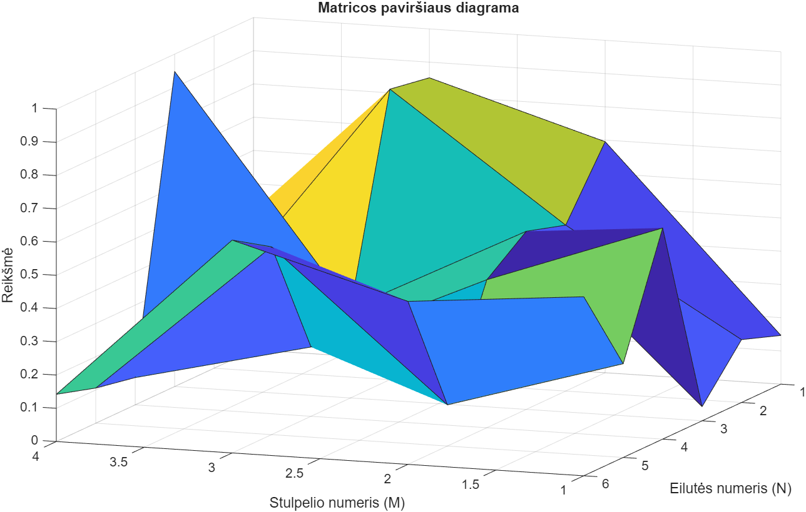
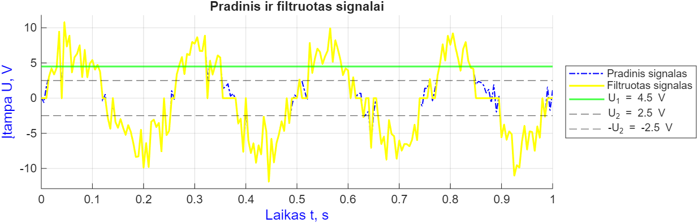
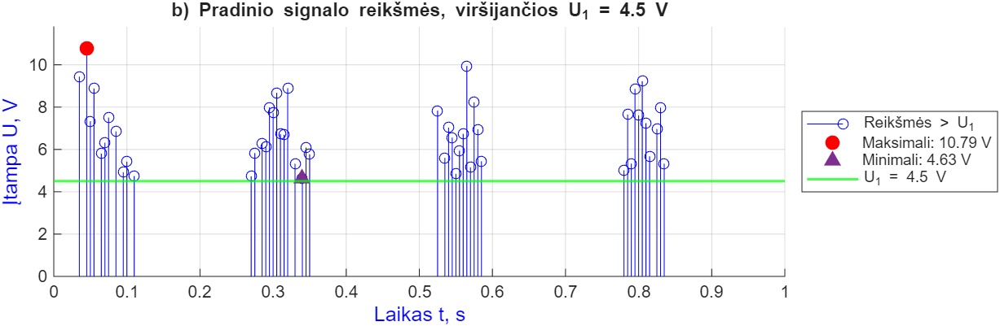
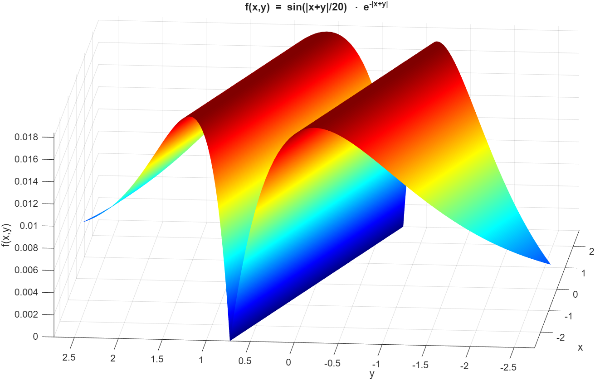
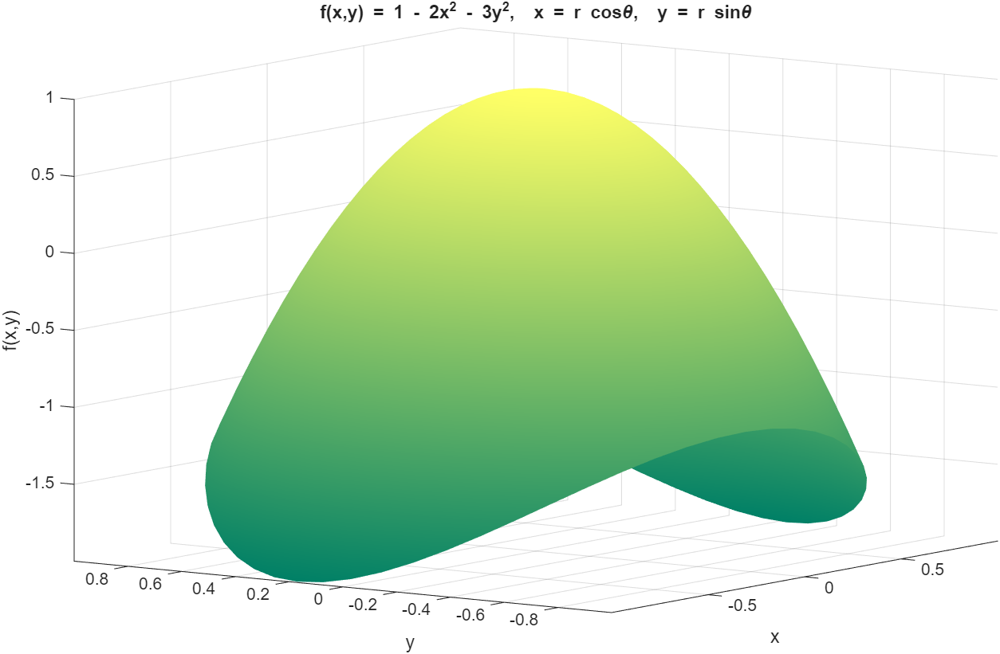
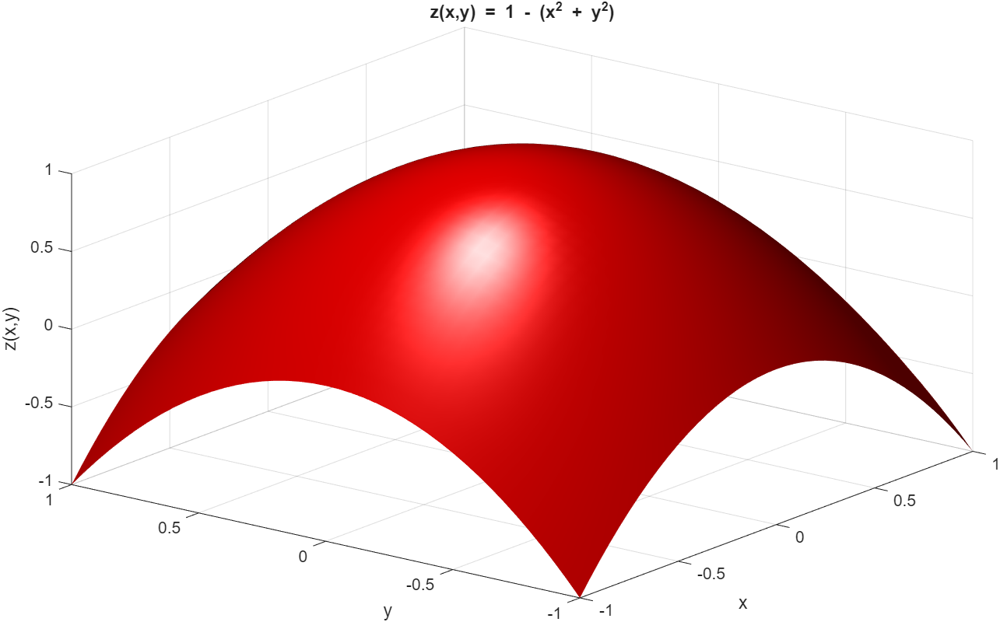

MATLAB laboratorinių darbų grafikai: signalų apdorojimas ir dviejų kintamųjų funkcijų vizualizavimas.

Atsitiktinės 6×4 matricos reikšmių vizualizavimas 3D paviršiumi

Triukšmingas signalas ir jo filtruota versija pagal įtampos slenksčius

Signalo reikšmės, viršijančios 4.5 V, su pažymėtu maksimumu ir minimumu

Dviejų kintamųjų funkcijos su moduliu ir eksponente 3D grafikas

Funkcija f(x,y) = 1 − 2x² − 3y², nubraižyta poliarinėse koordinatėse

Paraboloidas z = 1 − (x² + y²) su apšvietimo efektu